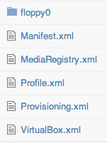

Docker + Maven
Building a tool for Docker to create and test containers.
By Alex Collins
Thank you!
Who am I?
Motivations for writing a tool.
What does the tool do?
Architecture of the tool.
Two short demos.
Who Am I?
"Recreational coder".
Server Side Java Technical Lead Of Game Studio Gamesys.
12 Years Of Enterprise Application Development Experience.
Co-author of Selenium WebDriver In Practice.
Like Andrew Martin who presented here in January - "I like lack of bugs".
"Recreational coder". Google "I am a recreational coder" - 5 results.
The WAR That Would Not Deploy
Problems
Regularly Broken.
Automatically Or Manually Deployed.
Angry QAs.
Nightly Test Suite Often Red (no feedback).
Cause
Dozens Of Developers Committing To A Large Tree Of Dependencies.
Solution?
Smoke test on the CI - bad WAR cannot get into the wild.
Send an IM notifcation to the the culprit.
QAs happy!
Test suite green, or red for the right reason.
Docker VirtualBox Plugin

Working on a software installer for Windows Server 2003.
Repeatedly install Windows onto a VirtualBox, copy and run scripts.
A plugin for the that builds and tests one or more VirtualBoxs - starting from nothing.
Masses of file I/O make writing the tool.
Even small amounts of I/O stack up if you do them a lot.
Jan '14
"Alex - Have you heard of Docker?"
I want my Docker applications to be tested before they get into the repository.
Must write a plugin to do so.
What Does The Plugin Allow?
Define one or may of containers (e.g. databases, web servers, application servers) throught files, configure them (ports etc.), and manage them as part of the build.
Allow you to run one or more images as part of the Maven project lifecycle.
Version control a project with the images it depends on.
Build containers using project artifacts.
Test those built containers before deploying.
Track image to the source code on it.
Maven ./pom.xml
com.alexecollins.docker
docker-maven-plugin
clean
validate
package
start
stop
deploy
DockerfileFROM dockerfile/java:oracle-java7
EXPOSE 8080
EXPOSE 9200
EXPOSE 9300
ADD ${project.build.finalName}.jar .
CMD java -jar /${project.build.finalName}.jar
conf.ymlpackaging:
add:
- target/${project.build.finalName}.jar
ports:
- 8080
- 9200
- 9300
healthChecks:
pings:
- url: http://localhost:9200/
- url: http://localhost:8080/
tag:
alexec/searchinabox:${project.version}
Demo: ElasticSearch in a Box
Docker, Maven, Java, Spring Boot, Elastic Search, JUnit, Selenium WebDriver
Demo: Selenium Grid
Docker, Maven, Java, JUnit, Selenium Grid
Tool Architecture
Layer 1: Docker API Client
"docker-java"
Does all the authentication with the Docker daemon.
Can be replaced with test doubles for dependencies to ease testing.
Layer 2: Docker Orchestrator
Meat - does heavy lifting.
Understand the configuration files.
Figures out image dependencies.
Acutally does the building images, and start/stop of containers.
Portable, can be use outside Maven.
Plugin-API (e.g. boot2docker).
Layer 3: Maven Plugin
Very hard to test plugins, so does very little.
Translate XML into set-up.
Best practise - do very little work.
What's Next?
Gradle, Ant, and SBT Versions
Docker Compose Compatibility
Tips On Tools
Try and utilize maintained third-party components.
Try and minimise file I/O.
Don't rely on the network when testing. Can you build your tool offline.
Think about how you can avoid repeating tasks, e.g. using caching.
Use test-doubles to speed up development.
When dealing with the OSS community, appreciate the help you get, but be careful of accepting pulls that don't have tests.
Have a good selection of test cases.